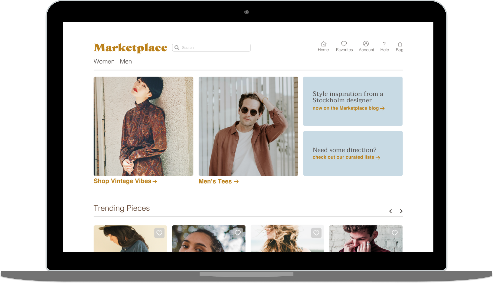
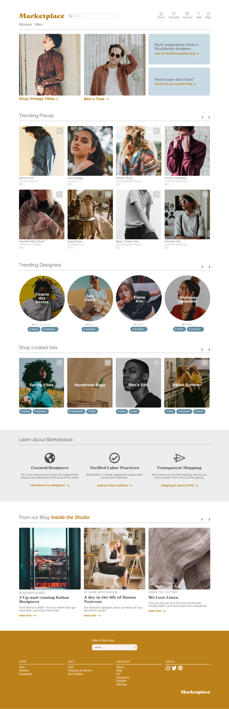

Let's get sustainable.
Fashion is the third most polluting industry on earth, and Marketplace is looking to change that. Welcome to your online destination for independent and sustainable fashion from around the world. Marketplace is a desktop e-commerce platform that allows user to shop independent fashion.
- UX Design
- Visual Design
- Branding & Identity
- Photography & Art Direction

Roles
- User Surveys
- Competitive Analysis
- Concept & Identity
- User Flows
- User Stories
- User Personas
- Wireframes
- High Fidelity Mockups

Deliverables
- Figma
- InVision
- Balsamiq
- Usability Hub

Tools
Overview
What is Marketplace?
Marketplace is a curated online collection of independent fashion designers. As consumers become more aware of the environmental and humanitarian costs of fast fashion, they're becoming increasingly interested in local and/or sustainable clothing.
Solving the Initial Problem
Clothing production requires a huge amount of resources and chemicals. The current demand for low-cost and low-quality clothing comes at the expense of factory workers, cotton farmers, and the environment. These are just a few of the ways the apparel industry is damaging:
- Chemicals used to grow cotton in developing countries end up polluting local water supplies and are cancerous to the farmers who come into contact with them daily.
- Clothing made abroad means a larger carbon footprint when these clothes are shipped overseas to their markets.
- Low-quality clothing that is meant to deteriorate creates a wasteful (and profitable) cycle of buying and disposing.
The Solution
Marketplace connects consumers to independent designers that they wouldn't discover in major online retailers. Shoppers can save their favorite pieces and designers to get updates when new items become available.

User Research
Testing the waters.
I started with a hypothesis: consumers are interested in ethical and sustainable clothing, but have limited options for finding it. I needed to test the waters first and see if people would even be interested in the type of platform I had in mind. I saw a market gap that Etsy doesn't fill, which is where the initial idea started. The survey was completed by over 40 participants. View the survey and see the key data in the charts below.
Key Questions:
- Are you interested in local and independent fashion designers?
- Where do you primarily shop for clothing?
- How often do you shop for clothing online?
- How much more are you willing to spend for sustaibly-produced clothing?
- What is your opinion on fast fashion (ex. H&M, Zara, Forever 21)?
Data
Interpreting the user research.
The results of my research were eye-opening and at times, contradictory. Consumers seem very interested in ethical and sustainable clothing, but the data also shows that they are not currently buying this clothing. Consumers, as seen in the chart below, are also willing to spend more for sustainable and humanely-produced clothing. The results confirmed my hypothesis that there is a market gap that is not currently being filled.
If you knew that a piece of clothing was produced with fair wages, safe working conditions, and environmentally-friendly materials, how much more would you be willing to spend on it?
45
total participants
48%
do not know where to find ethically-produced clothing
87%
are interested in supporting their local fashion industry
38%
belive that we should spend more on environmentally-friendly clothing
38%
do not know if there clothing is made using organic materials or is produced responsibly
58%
are concerned about the labor practices behind the production of their clothing
User Personas
Who is the Marketplace customer?
I used the data from the user survey to start shaping my user personas. I held user interviews four stakeholders - people I know that are heavy users of my main competitors: Etsy, Everlane, and Reformation. From the data and these conversations, I gained a clear perspective into what these customers want and the issues they face with the platforms that exist currently. There were several themes that were repeated by different users, which I made my main areas of focus going forward with personas and product decisions. These are:
- Easy search and filtering features in order to narrow down available options, especially by size.
- Location-based search was less important to users than I expected.
- Feel a connection to the maker / designer of the product.
- Be able to use the platform as a way to find and save inspiration.
Carine
Primary User
Influencer Stylist - Paris, FR
Goals
Frustrations

Jax
Secondary User
Product Manager - San Francisco, CA
Goals
Frustrations
Competitive Analysis
Seeing what exists.
Based on my conversations with users and my own market research, I chose three key competitors to Marketplace: Everlane, Etsy, and Reformation. Each company has a different approach to sustainable fashion, but each one appeals to the same type of Marketplace customer.

- Strength: Transparent shopping experience that shows the environmental effects of each garment.
- Weakness: Only available for women, and does not reflect the tastes of multiple designers.
- Opportunity: Maintaining the same line of environmental sustainability, but offer a platform to a number of voices.
- Threat: A strong online presence and new brick-and-mortar locations.

- Strength: Users have a wide variety of artisans to choose from for many types of products.
- Weakness: Site branding can make the experience feel cheap and cluttered at times, especially when shopping for clothing.
- Opportunity: Etsy falls short with their clothing section in terms of organization and visual design.
- Threat: Users in my target market are loyal to Etsy, so conversion may be difficult.

- Strength: Modern interface and well-crafted clothing. Everlane was one of the first large-scale retailers to discuss their labor practices.
- Weakness: Everlane only stocks their own brand, which means a limited selection of styles and sizes.
- Opportunity: According to my user research, my customer base has not yet become loyal to Everlane.
- Threat: The brand has an established web presence, and has been opening brick-and-mortar retail shops to appeal to the millenial consumer interested in "experiential" retail.
Brand Journey
Crafting a uniform voice.
I had an initial feeling in my mind of what I wanted the brand to feel like, but needed to dig deeper and turn that feeling into a cohesive design system. I knew I wanted the brand to be artisanal, authentic, and warm.
Color Palette
The Marketplace color palette is an updated take on "flea market chic." I wanted the brand to evoke a sense of warmth, but also a sense of nostalgia, like your favorite sweater you've had for years or the carpet at your grandma's house.
Logo Iterations
I originally wanted the logo to be extemely minimal in order to shift attention away from Marketplace branding and toward the designers on the platform. After receiving feedback from mentors, I learned that this logo was too minimal and needed a stronger sense of branding. I found a font on Typekit, Gastromond, which I felt perfectly represented the warmth and artistic bent of the brand.
Social Media
I knew the brand would have a strong presence on Instagram and Pinterest, so I worked on alternate forms of the logo that works in smaller spaces.
User Stories
What are the goals of the platform?
After creating the personas and using the data from the survey, I was able to create the user stories. I organized these by role, task, and value, and then sorted them according to their priority level. For the MVP I decided to focus on account creation, document creation, document organization, and file uploading. This decision was based on user data that pointed to user’s most necessary features. Here is a snapshot of the high-priority stories for the "user" role:
| I want to... | so that I can... |
|---|---|
| filter clothing based on size | narrow down which options are available to me. |
| search for clothing based on gender and clothing category | quickly find what I'm looking for. |
| save items in different lists | get inspiration for new looks and buy my favorite items later. |
| see a designer detail page | learn more about the designer and see where they're from. |
| create an account | save my interests and credit card information. |
| see shipping costs up front | not be surprised at the shipping cost when I go to checkout. |
| see suggested items based on the item I'm looking at | find more clothing that matches my style. |
| see a customized landing page when I return to the site | have a tailored shopping experience. |
User Flows
Visualizing the user journey.
Next I created user flows for various tasks within the product: user onboarding, document creation, document organization, etc. While creating the flows, I looked at the flows of competitors I had analyzed and worked to make things as clear as possible for the user.
Going into product detail:
Paper Prototypes
Quick design testing.
At this stage in the prototype, I wanted to use methods that would allow me to dispose of early ideas by testing them with users with paper prototypes. Through the paper prototyping process, I was able to gather key insights that would guide the rest of my product development. These key takeaways were:
- Users were less interested in location-based search than I expected, and I decided it would be best to stick to a traditional e-commerce model.
- Search and filtering, especially by size, is a top priority among users.
User Testing
Testing high-level user flows
I used high-fidelity design mockups to test high-level user flows:
- Searching for an item
- Checking out
- Navigating the landing page

I used maze to test these user flows and to get actionable data on the processes. I confirmed that certain e-commerce user flows were working well, and learned that others may need to be updated.

Visual Design
High-Fidelity Mockups and Further Testing
At this stage I was ready to apply my branding work to the wireframes. I mocked up my fist iteration of the visual designs and had this review by multiple UX professionals. Based on that feedback, I made some changes to the visual design in order to arrive at the final product.
Streamlining Checkout


Adding More CTAs


Final Product
Putting it all together
The final Marketplace product is a culmination of user research, testing, and visual design. After multiple iterations, I created an MVP product that solves the initial problem: connect consumers to independent, ethical, and sustainable fashion in a single location.
Landing Page
Checkout

Search and Filtering

Conclusion
What did I learn?
The process of designing Marketplace was both rewarding and challenging. I had the opportunity to build a platform that I believe could truly make a difference in the world, all while learning more about how different retailers craft their digital experiences. So, after all of this, what were my main takeaways?